Wstęp
Praca programisty polega nie tylko na programowaniu gier i animacji, czasami programista tworzy również aplikacje, które pomagają innym ludziom w wykonywaniu swoich zadań. Dzisiaj napiszemy aplikację, która ułatwi obliczanie pól figur geometrycznych.
Krok 1: Przygotuj scenę i duszki
Zadania do wykonania
-
Utwórz nowy projekt i nazwij go "Geometria"
-
Usuń kota. Dodajmy nowego duszka. Będzie on rozpoczynał działanie aplikacji. Wybierz duszka z biblioteki, może być to np. czarodziej.
-
Dodaj nowe tło dla sceny. Spośród grafik dostępnych w bibliotece wybierz jedną z grafik dla pomieszczeń i domaluj na nim tablicę.
-
Teraz Twoja scena powinna wyglądać mniej więcej tak:

Zapisz swój projekt
Krok 2: Pozostałe duszki
Zadania do wykonania
-
Ok. Twoja aplikacja będzie umożliwiała użytkownikom obliczenie pola trójkąta i kwadratu. W tym celu potrzebne będą Ci dwa duszki. Narysuj duszka "Kwadrat" i duszka "Trójkąt" i umieść oba duszki na tablicy.
-
Twoja scena powinna wyglądać obecnie podobnie do poniższej. Pamiętaj, że Twoje duszki mogą się różnić od zaproponowanych. Jeśli chcesz, możesz urozmaicić figury geometryczne lub zmienić czarodzieja na inną postać.
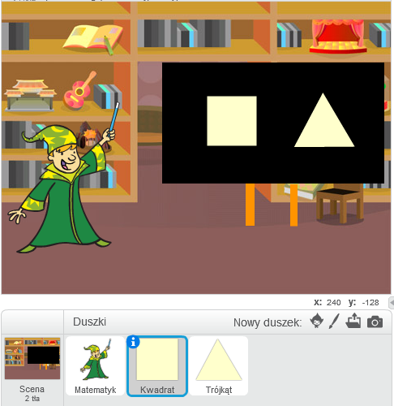
Zapisz swój projekt
Krok 3: Rozpocznij aplikację
Zadania do wykonania
-
Zaproś użytkownika do skorzystania z aplikacji. W tym celu niech Twój czarodziej zapyta, której figury pole będziemy liczyć. Dodaj takie bloki kodu dla czarodzieja:
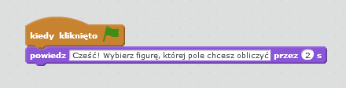
-
Następnie użytkownik powinien móc kliknąć na jedną z figur, aby rozpocząć obliczenia. Figury muszą jednak wiedzieć, że któraś z nich została wybrana. W tym celu posłużymy się zdarzeniami i zmienną, która będzie przechowywała informację o tym, która figura została wybrana. Dodaj następujące bloki dla duszka "Kwadrat":
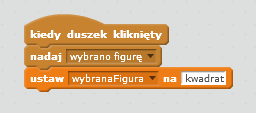
-
Pamiętaj, żeby utworzyć zmienną "wybranaFigura", inaczej nie będziesz mógł dodać dla "Kwadratu" takich bloków jak powyżej.
-
"Trójkąt" również powinien nadać komunikat, kiedy zostanie kliknięty i ustawić odpowiednią wartość zmiennyj "wybranaFigura":
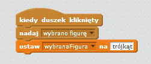
Zapisz swój projekt
Krok 4: Obliczenia
Zadania do wykonania
Ok, teraz już Twoja aplikacja wie, że użytkownik wybrał którąś z figur. Co dalej? Musimy obliczyć pole wskazanej figury! Każda z figur zajmie się obliczaniem swojego pola.
-
Zacznijmy od "Kwadratu". Powinien on zareagować na komunikat "wybrano figurę" i sprawdzić, czy wybrano właśnie jego. Jeśli nie, ukryjmy go, ponieważ będzie zbędny dla dalszego działania aplikacji:
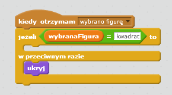
-
Dodaj analogiczny kod dla "Trójkąta". Pamiętaj, żeby zmienić wartość w warunku "Jeżeli..." na "trójkąt"!
-
Przetestuj aplikację. Czy po wybraniu odpowiedniej figury z tablicy znika druga figura? Czy po ponownym starcie aplikacji obie figury są widoczne? Pewnie nie! Musimy więc dodać następujący kod dla każdej z nich:
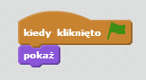
-
Ok. Jak zapewne pamiętasz, do przechowywania danych w naszych aplikacjach używamy zmiennych. Przygotujmy zmienne do obliczania pola kwadratu i trójkąta. Będą nam potrzebne takie zmienne, jak na obrazku:
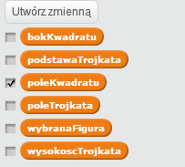
-
Odznacz widoczność wszystkich zmiennych, poza tą dla pola kwadratu. Zmienna powinna być teraz widoczna na scenie. Kliknij na nią prawym przyciskiem i wybierz opcję "duży odczyt". Teraz nazwa zmiennej na scenie powinna zniknąć. Ustaw zmienną mniej więcej tak jak na obrazku, w tym miejscu wyświetlimy pole kwadratu. Teraz odznacz zmienną, powinna ona zniknąć (ale jest już przygotowana pod późniejsze użycie). Zrób to samo dla trójkąta ze zmienną "poleTrójkąta". Pozostałe zmienne mogą pozostać w takim stanie jak są, one nie będą widoczne.
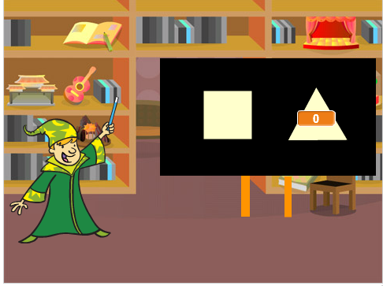
-
Wszystko gotowe, dodajmy kod liczący pole kwadratu (dla duszka "Kwadrat"):
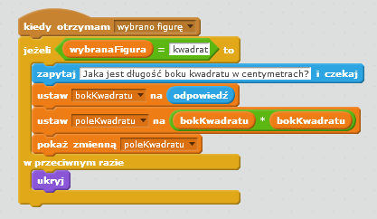
-
Przetestuj aplikację. Kliknij na zieloną flagę a następnie wybierz kwadrat. Aplikacja powinna zapytać Cie o długość boku kwadratu. Odpowiedz na pytanie, po chwili zmienna "poleKwadratu" powinna pojawić się obok figury z poprawnym wynikiem.
-
Dodajmy jeszcze jedną rzecz. Niech "Kwadrat" sam powie, jakie ma pole:
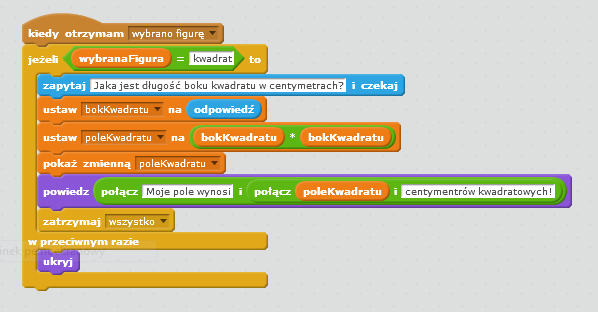
Przetestuj i zapisz swój projekt
Krok 5. Pole trójkąta
Zadania do wykonania
-
Czas na trójkąt! Jego pole wymaga odrobinę bardziej skomplikowanego wzoru: ½ × a × h, gdzie 'a' to długość podstawy trójkąta, a 'h' to jego wysokość. Musimy zapytać o te długości użytkownika. Kod dla trójkąta powinien wyglądać więc w ten sposób:
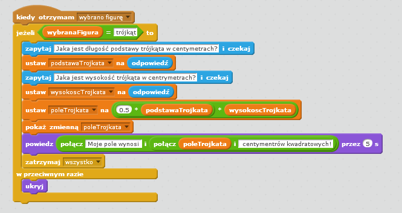
-
Twój kod jest gotowy. Sprawdź, czy wszystko działa poprawnie. Właśnie wykonałeś swoją pierwszą użytkową aplikację w Scratchu! Jeżeli masz jeszcze chwilę, spróbuj dodać możliwość liczenia pola koła albo prostokąta.